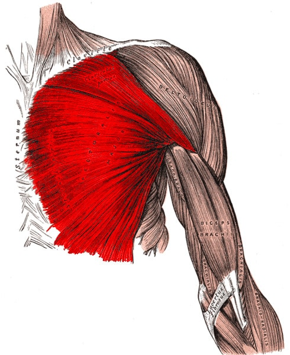
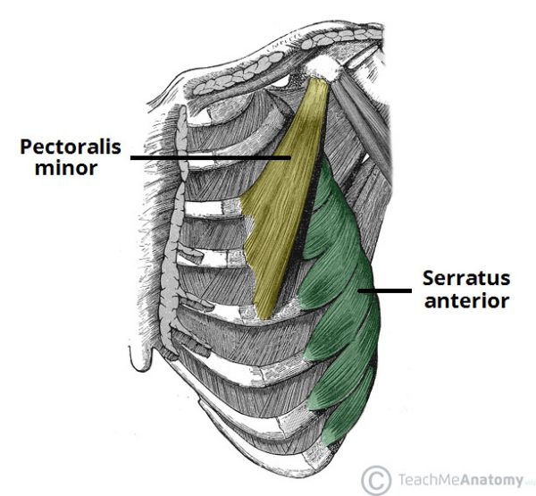
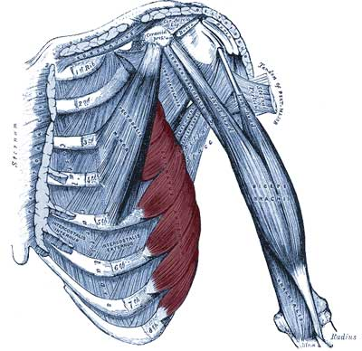
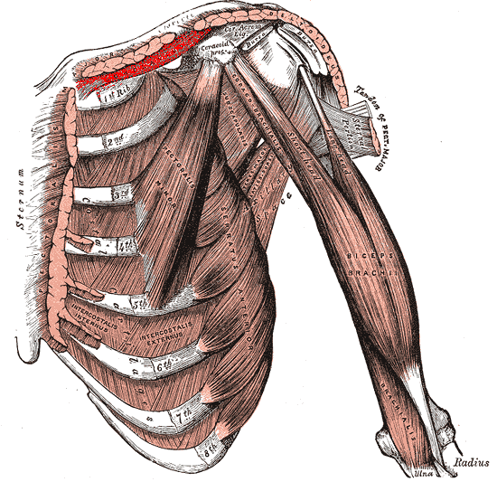
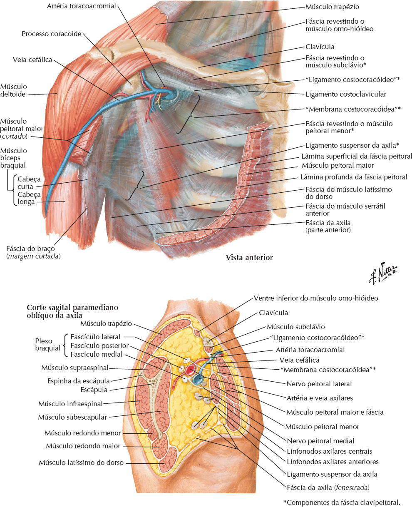

Alguns músculos que revestem a caixa torácica ou que nela se inserem servem primariamente a outras regiões.
Do mesmo modo, alguns músculos da parede anterolateral do abdome, do dorso e do pescoço inserem-se na caixa torácica.
Os músculos escalenos do pescoço, que descem das vértebras do pescoço até as costelas I e II, atuam principalmente na coluna vertebral.
Os músculos toracoapendiculares estendem-se da caixa torácica (esqueleto axial) até os ossos do membro superior (esqueleto apendicular).
São eles:
Peitoral maior
Inserção Medial: 1/2 medial da borda anterior da
clavícula, face anterior do esterno, face externa
da 1ª a 6ª cartilagem costais e aponeurose do
oblíquo externo do abdome.
Inserção Lateral: Crista do tubérculo maior.
Inervação: Nervo do Peitoral Lateral e Nervo do
Peitoral Medial (C5 – T1).
Ação: Adução, rotação medial, flexão e flexão
horizontal do ombro.

Peitoral menor
Inserção Superior: Processo coracóide.
Inserção Inferior: Face externa da 3ª, 4ª e 5ª
costelas.
Inervação: Nervo do Peitoral Medial (C8 – T1).
Ação:
Fixo no Tórax: Depressão do ombro e rotação
inferior da escápula.
Fixo na Escápula: Eleva as costelas (ação inspiratória).

Serrátil anterior
Porção Superior:
Inserção Posterior: Ângulo superior da escápula.
Inserção Anterior: Face externa da 1ª e da 2ª costelas.
Porção Média:
Inserção Posterior: Borda medial da escápula.
Inserção Anterior: Face externa das 2ª a 4ª costelas.
Porção Inferior:
Inserção Posterior: Ângulo inferior da escápula.
Inserção Anterior: Face externa das 5ª a 9ª costelas.
Inervação: Nervo Torácico Longo (C5 – C7).
Ação:
Fixo na Escápula: Ação inspiratória.
Fixo nas Costelas: Rotação superior, abdução e
depressão da escápula e propulsão do ombro.

Subclávio
Inserção Lateral: Face inferior da clavícula.
Inserção Medial: 1ª costela e cartilagem costal.
Inervação: Nervo do subclávio (C5 – C6).
Ação: Depressão da clavícula e do ombro.


